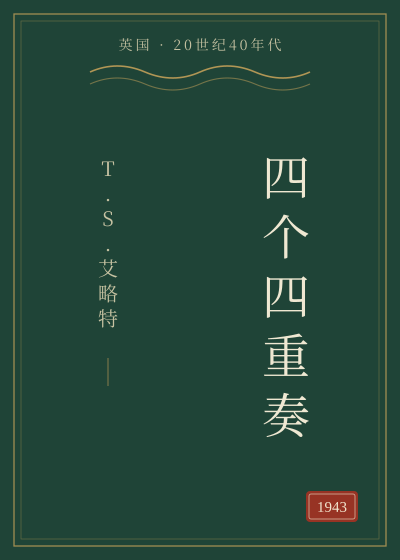
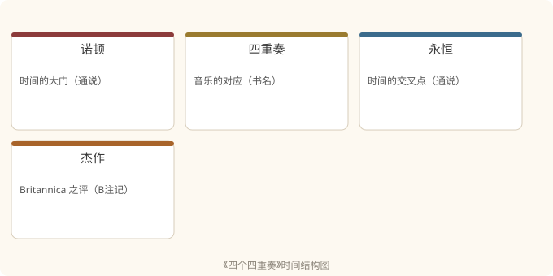

四个四重奏
一、基本信息
| 作者 | 艾略特 |
|---|---|
| 成书/出版 | 1943年（作者页注记：Britannica——四个四重奏 (1943)——'considered his masterpiece'） T.S. Eliot — Encyclopaedia Britannica（百科全书） |
| 国别/地区 | 英国 |
| 时代 | 近代 · 20世纪40年代 |
| 体裁 | 组诗 |
| 语言 | 英语 |

《四个四重奏》时间结构图（主题·结构图）
二、创作背景
作者页注记：四个四重奏 (1943)——'considered his masterpiece'（Britannica）。
Britannica：艾略特——1948诺奖（作者页语境——待核）。
题材（通说待核）：《焚毁的诺顿》《东库克》《干塞尔维吉斯》《小吉丁》——时间与永恒的四重奏。
三、内容脉络
（通说待核）四首组诗的'现在与过去'时间冥想。
（通说待核）'旋转门'与'火与玫瑰'的终点。
四、主要人物表
| 人物 | 身份 | 说明 |
|---|---|---|
| 冥想之'我' | 诗人 | （通说待核） |
五、主题与艺术特点
- 时间的哲学（书名语境——通说待核）。
- '现在时间与过去时间'开篇（通说待核——不直接引文）。
- 宗教沉思的晚期艾略特（通说待核）。
六、影响与评论
- Britannica：'considered his masterpiece'（作者页注记）。
T.S. Eliot — Encyclopaedia Britannica（百科全书） - Britannica：《荒原》为其成名作（作者页交叉）。
T.S. Eliot — Encyclopaedia Britannica（百科全书）
七、阅读建议
难点
- 组诗的互文结构。
- 基督教神秘主义语境（通说待核）。
- 《四个四重奏》中译本（人民文学等——通说待核）。
- 英文原版。
艾略特晚期首选；与《荒原》对读。
八、待核实
- 四首标题与年份（1935-1942分别发表说）核对。
- 1943年结集细节待核。
- '杰作'评价出处（Britannica 注记）核对。